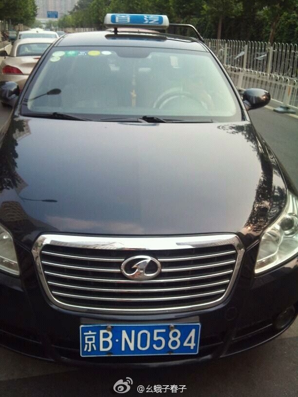

提供以流动为特色的服务的都可以借鉴。@战神天罡:几个月前搭了一个黑车，我教了小伙子3招：1开微信让附近人能搜到他；2开微博联络客户关系；3开陌陌在阿里巴巴附近出没，那里的女人很那个都有陌陌。今天碰到他说每天接好几单跑机场，生意很不错。运管无能，对杭州出租车已经不抱希望，我愿意免费教靠谱的黑车司机微博营销，解决打车难问题，你们看呢？
//@小V: 目睹了整个事件的刘先生//@Jacob嘉可伯: 目睹了整个事件的刘先生//@真老顽童: 目睹了整个事件的刘先生 //@李嵩波:目睹了整个事件的刘先生//@赵大延: 目睹了整个事件的刘先生//@TechWeb: 目睹了整个事件的刘先生---:抱歉，此微博已被作者删除。查看帮助： 网页链接
//@牛在丛中笑:中国的新一代职业人已经有相对完整的市场意识，跳槽是弥补经济高速发展带来的货币通涨的合理方式，不偷不抢光明磊落。欧美企业每年按惯例为员工一点点加薪的时候，中国本地市场却愿意用20%-50%的加薪幅度抢夺有经验的员工。这时用忠诚度来苛责中国打工族，太苍白无力了---:抱歉，此微博已被作者删除。查看帮助： 网页链接
我见过小朋友吃饭把碗盘舔得干干净净，洗的时候冲冲就行。垃圾回收做得好。这个方法是不是也可以教教并推广?//@老赵:太对了！完全跟我的情况一样，我还会老想着怎么边做饭边回收点内存，免得最后要洗一大堆，但有些人就是教不会呀555。@邓草原:程序员伤不起。每次做饭，我都很自然地使用最少的存储（碗盘）来完成，这样也可以少洗几个碗。可看到她做完一点点小吃，就在洗碗池旁留下一大堆碗筷，真是欲哭无泪呀。
//@时金魁://@-安旸-: //@傅天: 被拒载过无数次的默默转发//@孙雪东: 北京不少出租很无耻。更无耻的是出租管理方，以及管理方后面的黑社会集团。//@赖子黄: 既然这样就转发一下吧//@幺蛾子春子: 刚才01068325408给我打来电话没有明确说明拒载如何处理，而是让我删除微博！@首汽 店大欺客不是解决之道，@幺蛾子春子:@首汽 @首汽于洋 你们公司的车拒载！#随手拍照举报出租车拒载# 今天下午5点在建外soho路口，我怀抱2岁幼童，该车司机空驶状态恶劣拒载！京BN0584，拒载还出口辱骂，使我的孩子受到惊吓！哭泣不止！！！请好友们帮忙扩散~ 